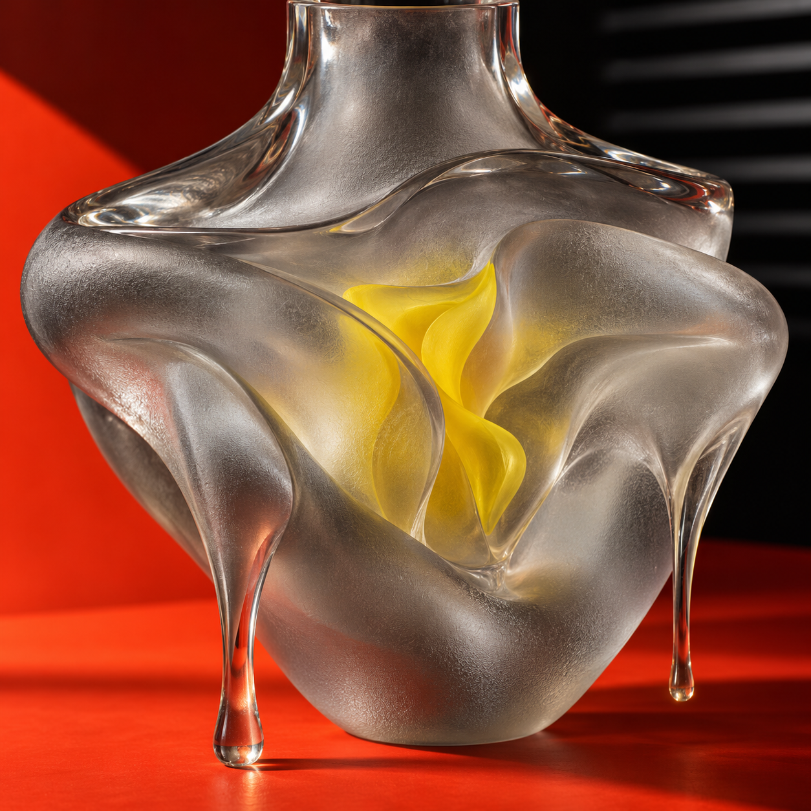
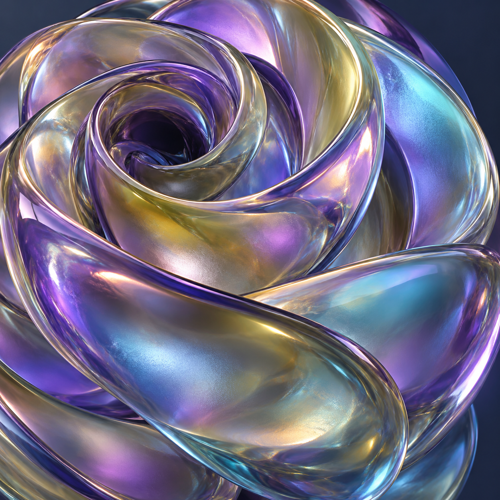

未读收藏


STICKY / ANCHOR RADIUS
粘连感，在根部。
拖动蓝色角标，根部会随距离变细。66px之内松手会回弹；越过后连接断开，释放时光点散去。取消或复位可以恢复。
d · 拖拽距离
px
r₀ · 断裂前锚点半径
原片公式 r₀ = 11 × (1 − d/66 × .72)。半径按66px夹紧为3.08；达到断裂距离后根部和连接隐藏，角标继续跟手。
当前状态
Esc 取消拖动Delete 移除角标
66px、.72与初始锚点11来自原片旁注。主角标直径66px、连接二次贝塞尔、断裂后不重新粘合、700ms衰减回弹、280ms光点散去与键盘/恢复是拟合补写。原片的再次出现可能是教学复位，此处不自动恢复未读；由用户动作恢复。界面与连接均代码，艺术图为独立生成，原片黑触点不作为产品控件。